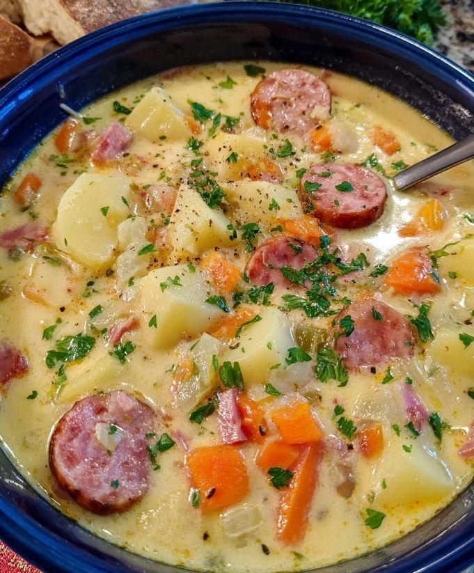

Kielbasa Potato Soup

- Meal
- Dinner
- Serves
- 6 (estimate: the source gives no yield; Kitchen reads it as ~4 bowls and scales ×1.5)
- Protein
- smoked turkey sausage (turkey kielbasa)
- Cook
- stovetop, one pot · ~20 min active / ~40 min total · easy
- Make-ahead / leftovers
- yes / yes (reheat gently; don't boil after the milk goes in)
- Mediterranean
- no
- WW tier
- moderate
- Status
- Trying out (probation)
Browned smoked turkey sausage with onion, carrot and celery, potatoes simmered in vegetable broth, then tempered whole milk and melted cheddar for a creamy, brothy one-pot soup. Not Cajun Potato Soup (cream-based, Cajun-spiced) and not Slow Cooker Crack Chicken Potato Soup.
Ingredients
Scaled ×1.5 for 6. Source amounts in [brackets]. ≈ marks a rounding.
- 1½ tablespoons olive oil [1 tablespoon]
- ≈1 lb (16 oz) smoked turkey sausage / turkey kielbasa, cut into bite-size pieces (15¾ oz exact; use one 14–16 oz rope) [10.5 oz]
- 1½ medium onions (or 1 large), diced [1 medium]
- 1½ medium carrots (or 2 small), diced [1 medium]
- 3 celery stalks, diced [2]
- 6 garlic cloves, finely chopped [4]
- ¾ teaspoon red chili flakes [½ teaspoon] — kids: cut to ¼ tsp
- 2¼ lbs potatoes, peeled and cubed [1.5 lbs]
- 7½ cups low-sodium vegetable broth [5 cups]
- ≈1¾ cups + 2 Tbsp whole milk (1⅞ cups exact) [1¼ cups]
- ≈5¼ oz cheddar cheese, grated (about 1⅓ cups) [3.5 oz]
- ¾ cup fresh parsley, chopped [½ cup]
- Salt and pepper, to taste
Method
Source method (Summer's Savor).
- Brown the sausage: heat the olive oil in a large pot or Dutch oven over medium. Cook the sausage 4–5 minutes, stirring, until it browns. Remove with a slotted spoon.
- Sauté the vegetables: in the same pot, cook the onion, carrot and celery about 5 minutes until soft, scraping up the browned bits.
- Aromatics: stir in the garlic and chili flakes for about 1 minute (don't burn the garlic).
- Simmer the potatoes: add the potatoes and broth. Bring to a gentle boil, then cover and simmer 10–12 minutes until fork-tender (at ×1.5, allow a few extra minutes to come to the boil).
- Temper the milk: mix the milk with a ladle of hot soup in a separate bowl, then slowly stir it back into the pot.
- Sausage and cheese: return the sausage. Stir in the cheddar a handful at a time until melted.
- Finish: simmer 2–3 minutes more (don't boil hard), stir in the parsley, and season with salt and pepper.
Notes
- Servings: the post gives no yield. Kitchen estimates the original makes ~4 dinner bowls (10.5 oz sausage, 1.5 lb potatoes, 5 cups broth) and scales ×1.5; the serving count is an estimate. The kielbasa amount rounds to a standard 1-lb package.
- Name vs. ingredient: titled "Kielbasa," but the source calls for smoked turkey sausage — turkey kielbasa fits both. Pork/beef kielbasa works but is fattier (would push the tier toward heavy).
- Processed meat: smoked sausage counts toward the ≤2 red/processed-meat cap, even as turkey.
- WW tier moderate: brothy (vegetable broth, whole milk — not cream) with lots of vegetables, but processed sausage and cheddar.
- Mediterranean ✗: olive oil ✓, vegetables ✓, potatoes ✓ on paper, but processed sausage is the headline; the deck doesn't count processed-sausage dinners toward the Med quota, turkey or not (same call as Sheet-Pan Sausage & Peppers and Cajun Potato Soup).
- Tomato / legumes / fish: none.
- a fish-free plate / hidden fish: no fish or shellfish in the recipe, so no swap needed. Check the sausage and vegetable broth labels for anchovy/fish sauce if a brand is unfamiliar.
- Nutrition: not given by the source; none listed here.
Source: Summer's Savor (@summerfood), via X: https://x.com/summerfood/status/2112651320368959842 ("Kielbasa Potato Soup: The Ultimate Cozy One-Pot Comfort Meal")